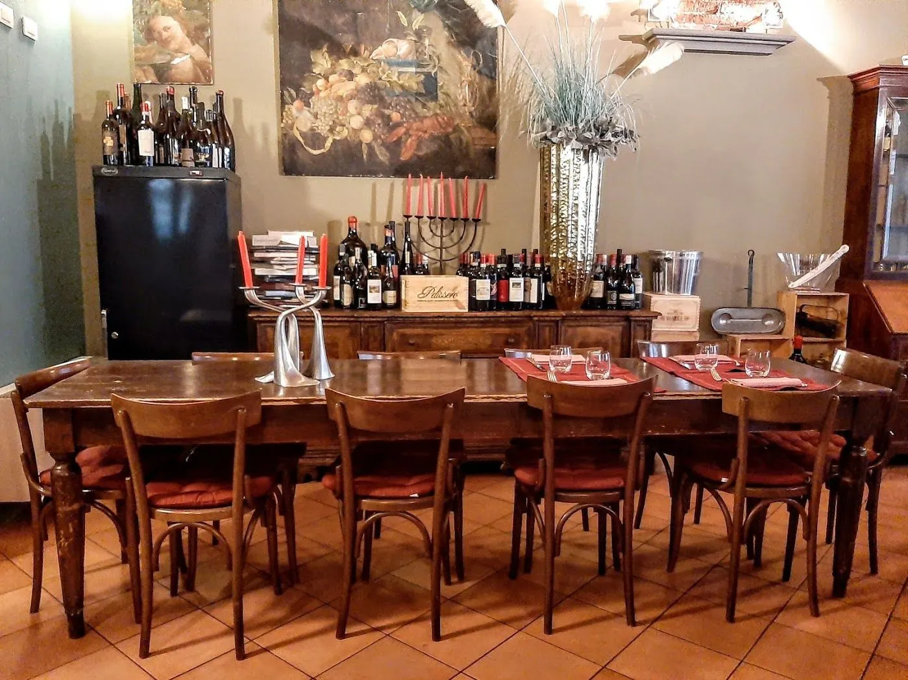
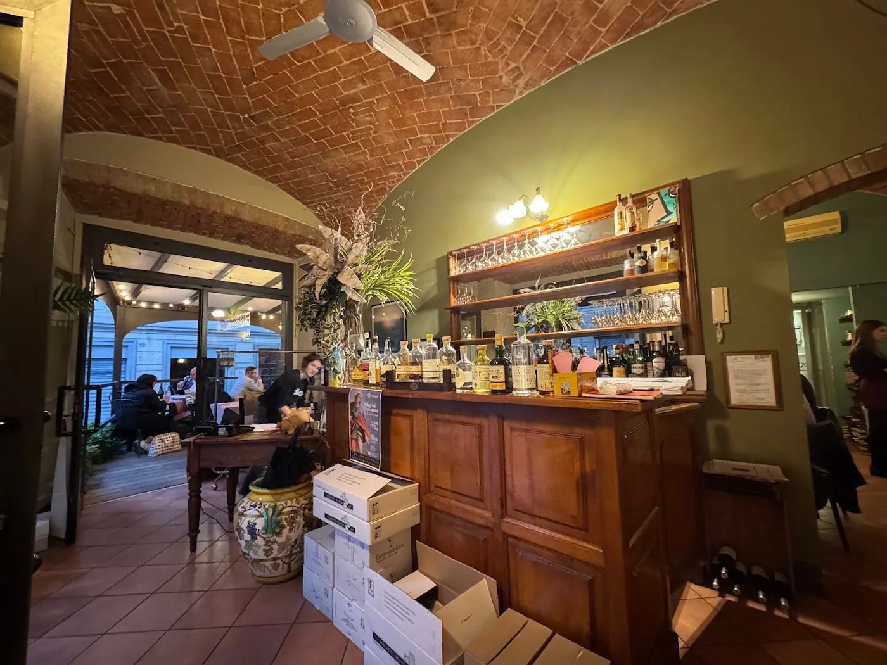
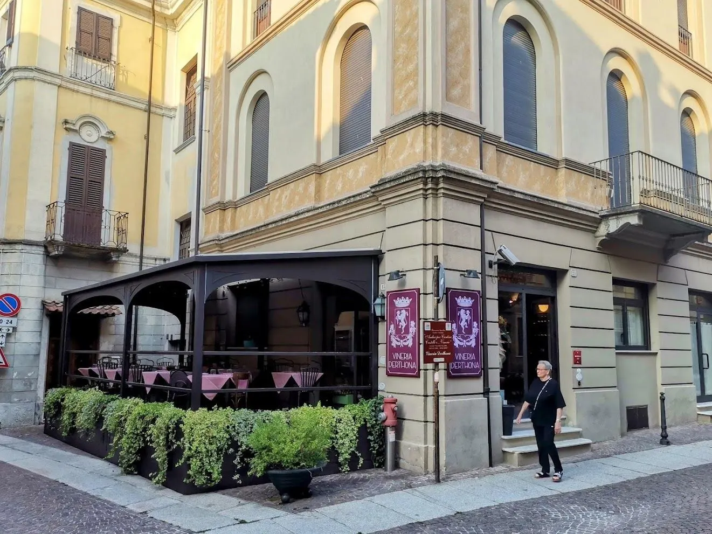
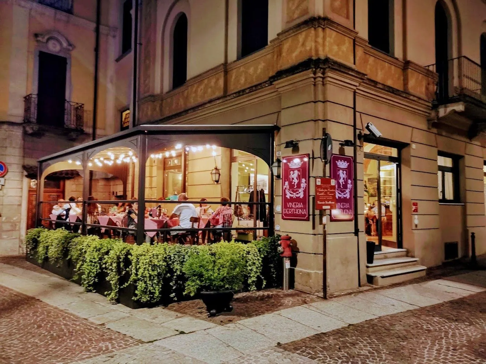

Una casa dell’Ottocento, all’angolo di via Seminario.
Il restauro ha riportato alla luce ambienti con ariose volte in mattoni: l’atmosfera giusta per una vineria. Quando la stagione lo consente, alcuni tavoli si spostano davanti al locale.




Un tavolo sotto le volte.
Via Lorenzo Perosi, 15, 15057 Tortona (AL)
Cellulare 335 831 1528
| Martedì | 12:00–14:00 · 19:30–22:00 |
|---|---|
| Mercoledì | 12:00–14:00 · 19:30–22:00 |
| Giovedì | 12:00–14:00 · 19:30–22:00 |
| Venerdì | 12:00–14:00 · 19:30–22:00 |
| Sabato | 19:30–22:30 |
| Domenica | 19:30–22:00 |
| Lunedì | Chiuso |
Prima di venire
Come si prenota alla Vineria Derthona?
Con una telefonata allo 0131 812468 oppure al 335 831 1528.
Quando siete aperti?
A pranzo dal martedì al venerdì, a cena dal martedì alla domenica. Il lunedì siamo chiusi.
Dove si trova il locale?
In Via Lorenzo Perosi, all’angolo con via Seminario, nel centro di Tortona.